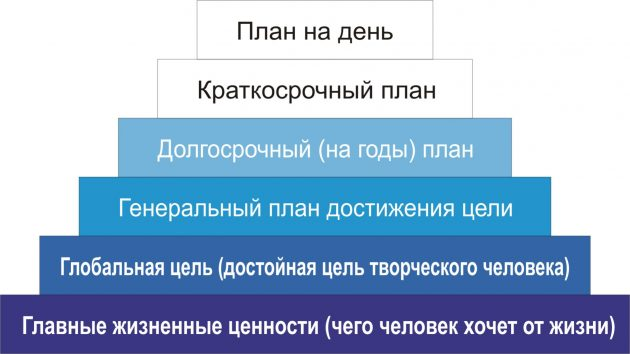
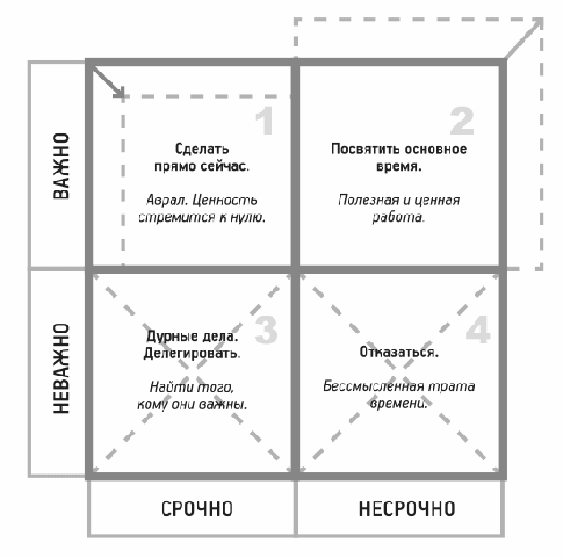

Время — дефицитный и невосполнимый ресурс. Научитесь использовать его с умом.
Бенджамин Франклин был сыном мыловара, но благодаря самоорганизации и дисциплине преуспел во многих областях: в политике, дипломатии, науке, публицистике. Он является одним из отцов-основателей Соединённых Штатов Америки — участвовал в создании Декларации независимости и конституции страны. Портрет Франклина помещён на стодолларовую купюру, хотя он никогда не был президентом США. Ему приписывается авторство таких крылатых фраз, как «Время — деньги» и «Не откладывайте на завтра то, что можно сделать сегодня». Время для Франклина действительно имело колоссальное значение.
Любишь жизнь? Тогда не теряй времени, ибо время — ткань, из которой состоит жизнь.
В 20 лет Франклин разработал для себя систему организации времени, которой пользовался на протяжении всей жизни. Современники назвали её «пирамидой Франклина» (иногда также встречается наименование «пирамида продуктивности» — productivity pyramid).
В основе пирамиды — жизненные ценности. Это моральные ориентиры в решении любых задач. Франклин называл их добродетелями.
Для себя он определил 13 добродетелей: воздержанность, молчаливость, любовь к порядку, решительность, бережливость, трудолюбие, искренность, справедливость, умеренность, чистоплотность, спокойствие, целомудрие и кротость.
Чтобы ежедневно работать над собой, Франклин завёл специальную записную книжку, в которой отвёл по странице на каждый жизненный принцип. Каждую страницу он разлиновал на семь столбцов (дни недели). Затем провёл 13 горизонтальных линий по числу добродетелей.
Таким образом, каждый день он фокусировался на одной из добродетелей, а по вечерам в квадратиках отмечал промахи, допущенные на пути к «моральному совершенству».
Следующая ступень пирамиды Франклина — это глобальная цель. Она базируется на жизненных принципах и отвечает на вопрос: «Чего я хочу достичь к N годам?» Глобальной целью для врача, например, может являться стремление стать завотделением до 35 лет, а для менеджера — запустить свой стартап.
Бенджамин Франклин — поистине праотец to-do-планирования. Он всегда придерживался распорядка и расписывал буквально каждый свой шаг. Поэтому далее в его пирамиде идут:
Все ступени пирамиды расположены последовательно — каждая следующая опирается на предыдущую.
Чтобы организовать свой день по методу Франклина, нужно определиться с фундаментальными жизненными принципами, поставить глобальную цель и составить план по её достижению.
Для долгосрочного и краткосрочного планирования можно использовать один из электронных инструментов либо завести бумажный блокнот и внедрить систему «Быстрых записей».
Одним из последователей системы Франклина считается Стивен Кови. Это всемирно известный эксперт и коуч в области менеджмента. Кови — профессиональный оратор и автор множества книг. Одна из них вошла в список самой влиятельной бизнес-литературы журнала Time.
Это опередившая своё время книга «Семь навыков высокоэффективных людей». Кови написал её в 1989 году, но бестселлером она стала лишь после переиздания в 2004-м.
Концепция Кови базируется на последовательности из семи навыков.
Реализовать последний навык поможет матрица распределения задач и расстановки приоритетов. Её Кови позаимствовал у 34-го президента США Дуайта Дэвида Эйзенхауэра.
Все задачи распределяются на четыре группы:
По мнению Кови, успешные люди крайне редко оказываются в цейтноте, так как быстро расправляются с задачами из категорий 1 и 3 и без жалости жертвуют делами из квадрата 4. При этом 60–80% времени и сил они отводят на решение задач из квадрата 2, потому что именно они являются локомотивом прогресса.
Чтобы стать эффективнее, в конце или начале дня выписывайте стоящие перед вами задачи и задавайте им приоритетность при помощи матрицы Эйзенхауэра (или матрицы Кови — кому как больше нравится). Для этого можно воспользоваться приложением Eisenhower (iOS) или MyEffectivenessHabits (Android). Старайтесь соблюдать пропорцию: 40% — важные срочные дела, 60% — важные несрочные.
Тимоти Феррисс — популярный гуру продуктивности. Записи его публичных выступлений собирают миллионы просмотров, а книги расходятся такими же огромными тиражами.
Немудрено — кому не хочется «работать по 4 часа в неделю, не торча в офисе „от звонка до звонка“, и при этом жить где угодно и богатеть»? Одноимённая книга Феррисса стала номером один в списках бестселлеров The New York Times и The Wall Street Journal.
Его метод стоит на двух китах:
Чтобы успевать больше, не нужно увеличивать продолжительность рабочего дня. Напротив, сокращайте её, фокусируйтесь только на действительно важном. Всё остальное отметайте, отдавайте на аутсорсинг или делегируйте.
Подходу Феррисса соответствует техника планирования 1–3–5. Её суть проста: в список дел вносится одно важное дело, три средних и пять мелких. Всего — девять. Они априори распределены по срочности, что помогает избавиться от ощущения аврала.
Феррисс — противник многозадачности и информационных перегрузок. При одновременном выполнении нескольких дел происходит расфокусировка внимания. В результате производительность не повышается, а падает. Так же обстоит дело с беспрерывным поглощением информации. Постоянная проверка почты, мессенджеров и соцсетей лишь создаёт ложное ощущение занятости, но не приближает к цели.
А вот стрессы, напротив, Феррисс считает нашими помощниками.
Страх — это индикатор. Страх — наш друг. Временами он показывает, чего не следует делать, но чаще показывает, что как раз стоит делать. Тим Феррисс
Следует отметить, что Тим Феррисс не единственный, кто стремится к продуктивности, работая меньше. Стивер Роббинс, автор книги «9 шагов к тому, чтобы работать меньше и успевать больше», предлагает для этого метод «активных дней», когда в определённый день назначаешь себе «контролёра», который будет следить за прогрессом.
Этот метод подойдёт вам, если вы не можете следовать строгому графику и to-do-списки для вас не работают. Стройте свой день так, чтобы 20% времени занимали наиболее сложные и важные дела. Остальное пусть идёт своим чередом. Иными словами, если вам необходимо провести деловую встречу, то нужно выбрать день, время, продолжительность и строго следовать намеченному. Оставшуюся часть дня можно посвятить любой текущей работе.
Глеб Архангельский — эксперт в области организации времени, основатель и руководитель одноимённой компании. Его особенность не в создании оригинальных разработок, а в том, что он излагает приёмы тайм-менеджмента просто и доступно, адаптируя их к отечественным реалиям.
Архангельский — автор нескольких популярных бизнес-книг: «Работа 2.0: прорыв к свободному времени», «Формула времени», «Тайм-драйв» и других.
Последняя наиболее популярна. В «Тайм-драйве» рассказывается о важности планирования, целеполагания и мотивации, а также приводятся действенные приёмы управления временем и борьбы с прокрастинацией.